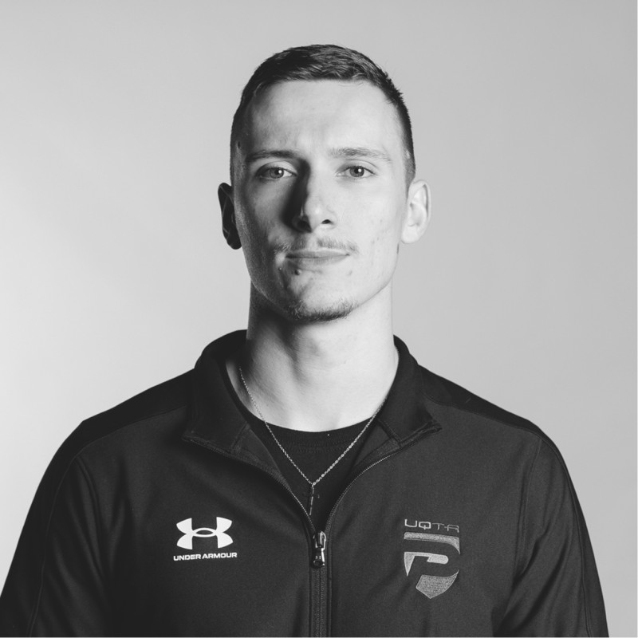

Thermal & Environmental Physiology
Heat stress, thermoregulation, heat acclimation, core & skin temperature, sweating, thermal perception.

Exercise Physiology · Environmental Physiology · Occupational Heat Stress · Heat Acclimation
PhD researcher in exercise and environmental physiology in Canada, studying how the human body responds and adapts to heat stress. I develop heat acclimation strategies designed to move beyond the laboratory and into occupational settings. Previously, I studied human performance in heat at France’s National Institute of Sport, and pathophysiology in operational environments at the French Armed Forces Biomedical Research Institute. From performance to pathology to extreme environments, my work explores how the human body responds, adapts, and performs under physiological stress.
I have always been fascinated by what happens when the human body is pushed beyond the ordinary.
Sport was probably where that curiosity started. First as a national-level athlete, then as a coach, I spent years watching people learn, adapt, fail, recover, and eventually do things their bodies could not do a few months earlier. Research gave me a different way of asking the same questions.
Over time, those questions took me from human performance in elite sport to pathophysiology in military environments, and eventually to the physiological challenges of working in extreme heat. Along the way, they also took me across the Atlantic — from France to Canada — to pursue a PhD and continue exploring the limits of human physiology.
I have always been drawn to things that put me slightly outside my comfort zone. I like understanding how things work, breaking problems down, and figuring out how the pieces fit together — perhaps there is a bit of an engineer's mind behind the scientist.
But understanding has never been enough on its own. I like turning ideas into something tangible: testing them in the field, building something that works, or passing knowledge on through teaching and coaching.
Perhaps that is what connects everything for me — sport, coaching, research, and the need to keep moving, learning, and discovering what comes next. New environments have repeatedly pushed me to adapt and rethink what I thought I knew. And that is ultimately what keeps me curious about the human body too: its remarkable ability to do the same.
Heat stress, thermoregulation, heat acclimation, core & skin temperature, sweating, thermal perception.
Exercise testing, cardiovascular & metabolic responses, fatigue, strength, performance assessment.
Indirect calorimetry, ECG, laser-Doppler flowmetry, local & whole-body sweat rate, core & skin temperature, blood pressure.
Experimental design, repeated-measures studies, mixed-effects models, Bland–Altman analysis, MATLAB, Prism.
At a glance
Beyond research
Data organization, analysis, visualization, MATLAB, Prism, and building clear research workflows.
UQTR student-athlete, French TeamGym vice-champion (2022), national-level gymnast, and university cheerleader.
Drawing, painting, visual creation, and exploring ideas through images and design.
Competitive gymnastics coaching, head-coach responsibilities, summer-camp coaching, and activity leadership.
Digital tools, web technologies, IT systems, and understanding how technology works.
Event staff, server, freelance scientific data processing, and sports retail.